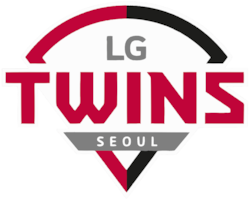
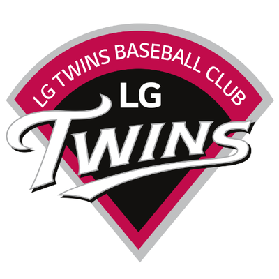
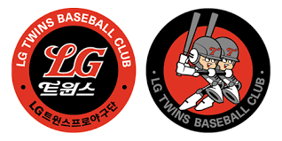
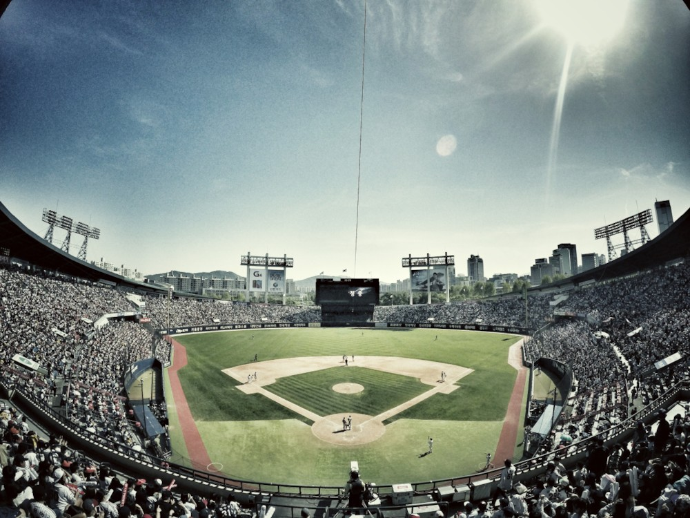
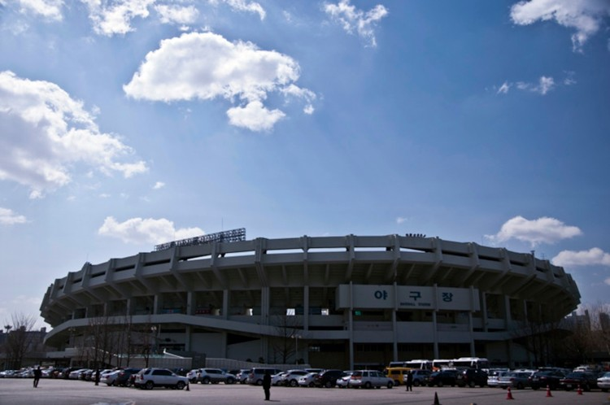
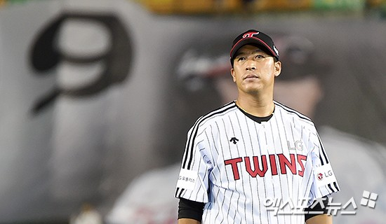
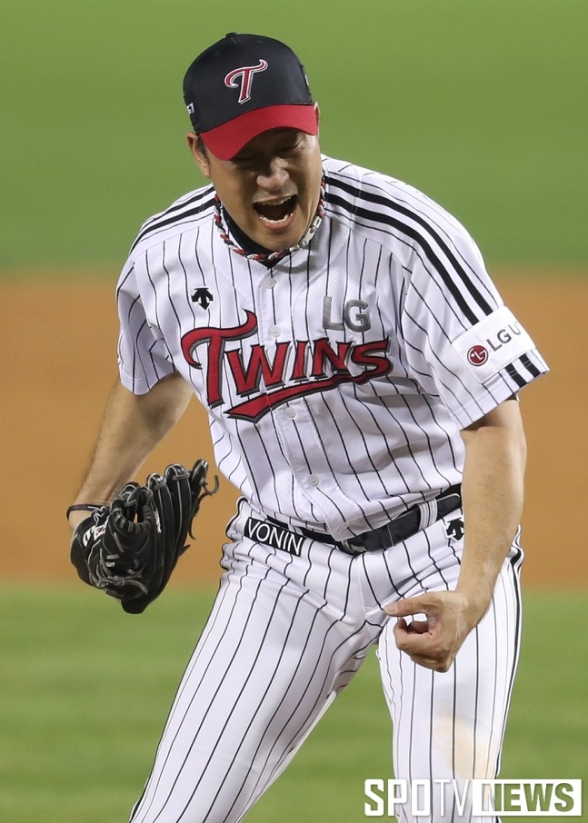
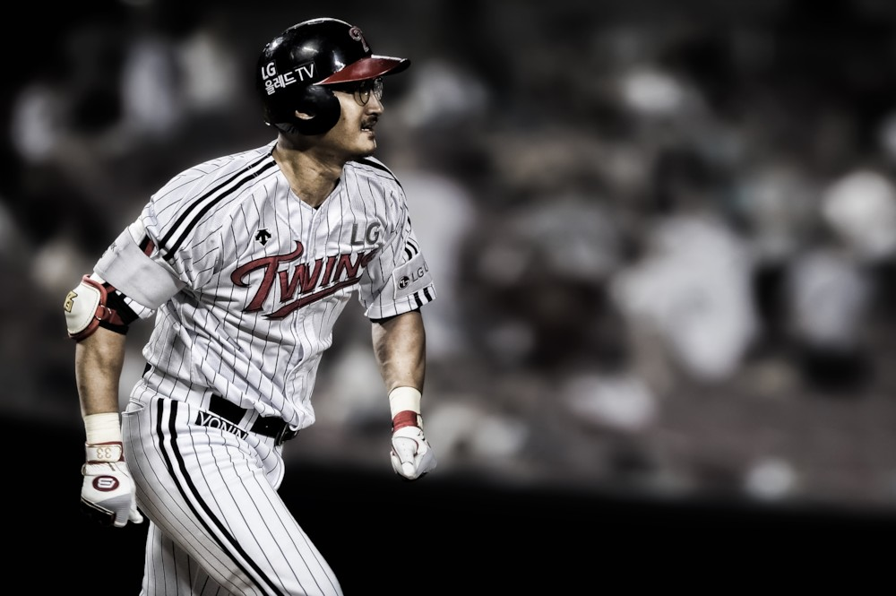

“ LG트윈스 ”

LG트윈스 공식 사이트
1. 구단 소개
- KBO 리그의 산하 프로야구단이며 서울특별시를 연고지로 하는 팀이다.
- 모기업은 LG그룹으로 산하 스포츠법인인 LG 스포츠에의해 관리되고 있다.
- 홈 구장은 잠실종합운동장 야구장을 사용하고 있다.
| LG트윈스 역대 로고 |
| 현재 | 2006~2016 | 1990~2005 |
|
|

|

|
| 홈 구장(잠실 야구장) |
| 내부 |

|
| 외부 |

|
2. 주요 선수
이병규(No.9)

- 1997 ~ 2016
- 2017년 7월9일 영구결번(No.9)
KBO 통산기록
| 경기 수 | 타수 | 타율 | 안타 | 홈런 | 타점 | 도루 | 볼넷 |
| 1741 | 6570 | 0.311 | 2043 | 161 | 972 | 147 | 526 |
봉중근(No.51)

- 2007 ~ 2018
KBO 통산기록
| 경기 수 | 이닝 | ERA | 승 | 패 | 세이브 |
| 321 | 899 1/3 | 3.41 | 55 | 46 | 109 |
박용택(No.33)

- 2002 ~ (진행중)
KBO 통산기록
| 경기 수 | 타수 | 타율 | 안타 | 홈런 | 타점 | 도루 | 볼넷 |
| 2074 | 8060 | 0.309 | 2384 | 217 | 1177 | 312 | 807 |
출처 - KBO 기록실
3. LG트윈스 2005~2018
| 연도별 성적 |
| 연도 | 정규시즌 | 순위 | 경기수 | 승 | 패 |
| 2005 | 6위/8팀 | 6위 | 126 | 54 | 74 |
| 2006 | 8위/8팀 | 8위 | 126 | 47 | 75 |
| 2007 | 5위/8팀 | 5위 | 126 | 58 | 62 |
| 2008 | 8위/8팀 | 8위 | 126 | 46 | 80 |
| 2009 | 7위/8팀 | 7위 | 133 | 54 | 75 |
| 2010 | 6위/8팀 | 6위 | 133 | 57 | 71 |
| 2011 | 6위/8팀 | 6위 | 133 | 59 | 72 |
| 2012 | 7위/8팀 | 7위 | 133 | 57 | 72 |
| 2013 | 2위/8팀 | 3위 | 128 | 74 | 54 |
| 2014 | 4위/9팀 | 4위 | 128 | 62 | 64 |
| 2015 | 9위/10팀 | 9위 | 144 | 64 | 78 |
| 2016 | 4위/10팀 | 4위 | 144 | 71 | 71 |
| 2017 | 6위/10팀 | 6위 | 144 | 69 | 72 |
| 2018 | 8위/10팀 | 8위 | 144 | 68 | 75 |
출처 - KBO 기록실
4. 2019년 LG트윈스 전망
- 내야진 변화
- 일단 1루는 외국인 선수에게 돌아갈 확률이 높은데, 링크가 돌고 있는 토미 조셉( 2019 새로운 용병 )을 포함한 몇몇 선수들이 거론되고 있다.
- 2루는 정주현이 유력하지만 박지규나 양원혁, 2차 드래프트에서 뽑은 신민재의 기용 가능성도 있다.
- 문제는 3루인데 부상으로 시즌 절반을 날린 가르시아( 2018 용병 ) 를 대신해 3루를 보던 양석환이 군대를 가게 되면서 3루는 공석이 되었다.
- LG는 김민성( 전 넥센 히어로즈 )을 FA로 영입하면서 3루를 채웠지만 아직 미지수이다. 백업으로는 김재율과 수비요정이 된 윤진호,
- 2군에서 유의미한 성적을 찍은 류형우, 작년 말에 1군에 선보인 장시윤과 신인 문보경 중에서 될 것으로 전망된다.( 참고자료 - 나무위키 2019 LG트윈스 )
- 투수코치 변경과 베테랑 투수의 영입
- 차명석(현재 LG 트윈스 단장)과 강상수가 투수코치로 있는 동안 LG 마운드를 지배한 메타는 구속보다는 제구력에 집중하는 것이었다. 그 결과
- 2017년까지는 압도적인 파워 피쳐가 없어도 제구력으로 맞춰 잡으며 팀 방어율이 상위권을 찍었다.
- 그러나 2018년 들어 그동안 누적된 혹사의 여파에 쓸놈쓸( 쓸놈 만 쓴다)로 인한 혹사가 겹치고, 여름 들어 부상이 전염병처럼 돌면서 투수들이 무너지고 말았다.
- 이후 시즌이 끝나고 최일언을 투수코치로 데려왔다. 2010년대 NC의 철벽 마운드를 만든 최일언이 부임하면서 부진했던 투수들의 성장을 기대하고 있다.
- 또 베테랑 투수인 장원삼(전 삼성 라이언즈)&심수창(전 한화 이글스)을 영입하면서 경험이 있는 투수들의 활약을 기대하고 있다.( 참고자료 - 나무위키 2019 LG트윈스 )